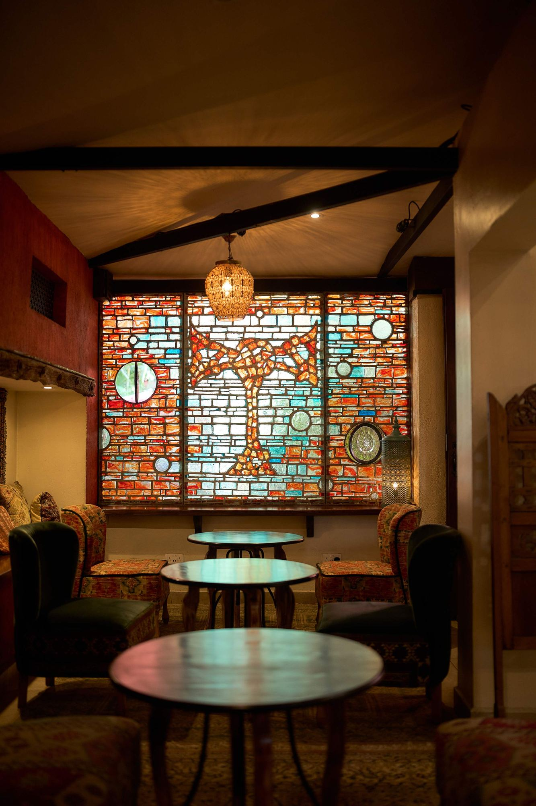
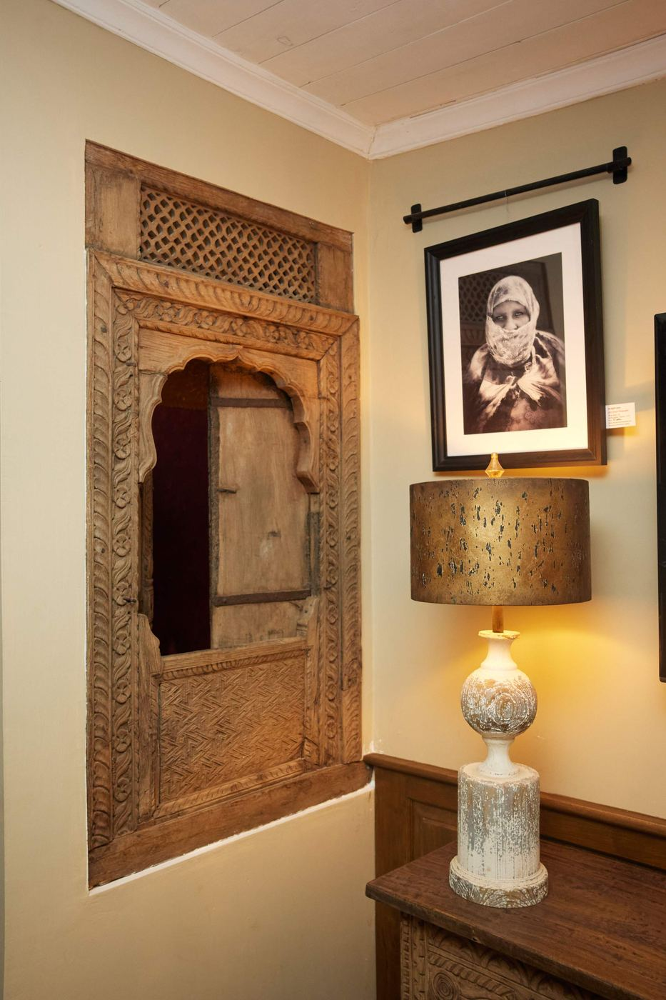
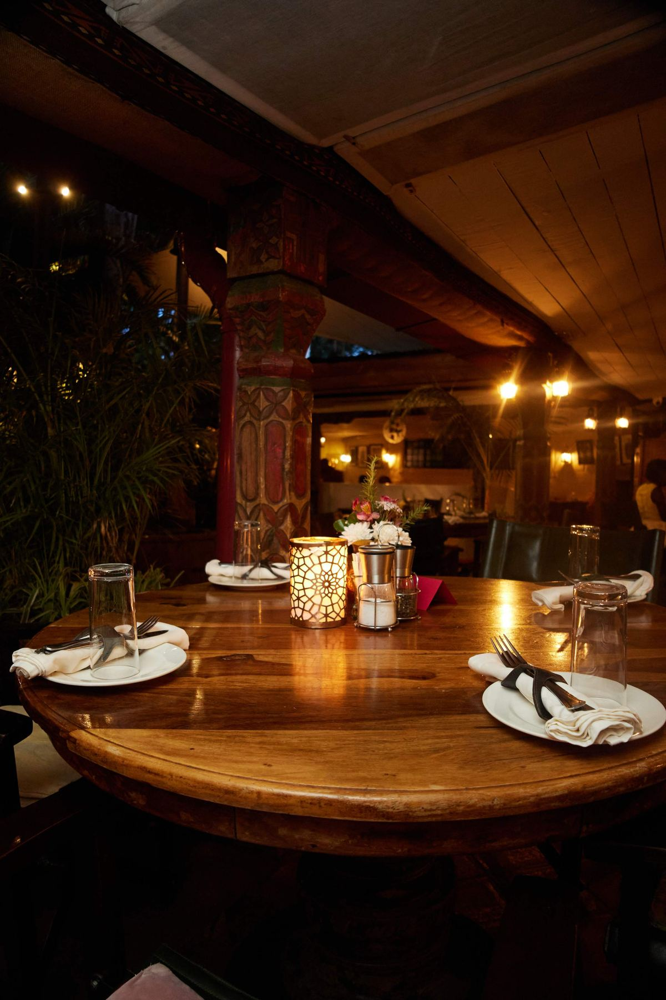

An iconic location
Still on Ngong Road, in the same house, with the fireplace and painted wall intact.

Our Story
Opened at the end of 2003 by two people who had never run a restaurant.

How it began
Sharly and Ian Cameron traded kilims and carved furniture. In a shop in Afghanistan, Sharly spotted a talisman above the door: to ward off evil and bring good luck.
Five years, they promised. More than twenty years later, it is still here.
Carpets, kilims and carved pillars, and the talisman above a shop door.
Driving home with an empty fridge, they found the old plot was free.
The pillars came out of storage. Five years, they promised each other.
Ranked the city’s number one restaurant.
Two regulars, Satyan and Stue, bought it and run it still.
The original fireplace and painted wall remain, with many of the first staff.

“I still love going there, and many of the original staff are there today to welcome one and all.”
Sharly Cameron · Co-founder
Still on Ngong Road, in the same house, with the fireplace and painted wall intact.
Food from our own farm and from kitchens around the world, with chef’s specials daily.
Local artists on the walls and live music by the fire, all through the year.